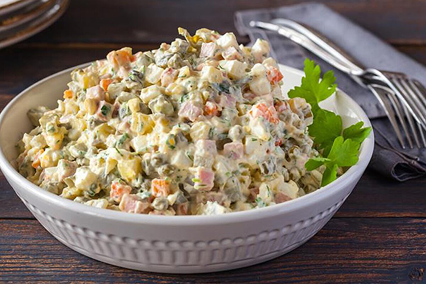
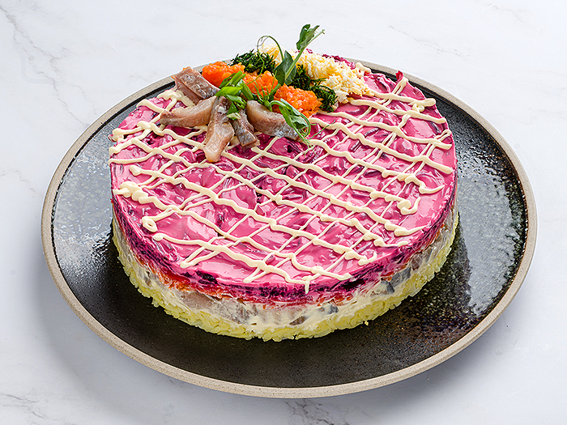
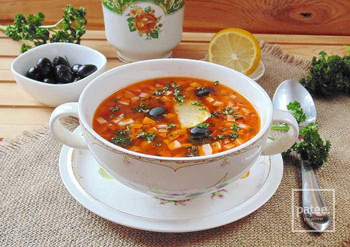
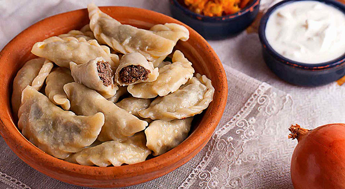
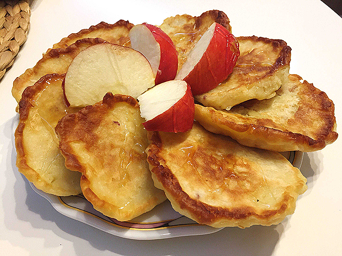

| Название блюда | Оценка блюда | Рецепт блюда | Фото блюда |
|---|---|---|---|
| Салат оливье по-советски | 10 | 200 г докторской колбасы, 3 картофелины, 2 моркови, 2 яйца, 1 головка репчатого лука, 2 солёных огурца, 2 ст. ложки консервированного зеленого горошка, 1 ст. ложка майонеза, 4 ст. ложки сметаны, соль по вкусу. Картофель, морковь и яйца отварите, остудите, очистите и нарежьте небольшими кубиками. Луковицу очистите, измельчите. Огурцы очистите и мелко нарежьте. Колбасу нарежьте небольшими кусочками. Соедините подготовленные продукты с горошком, посолите, заправьте майонезом и сметаной. |
 |
| Селедка под шубой классическая | 10 | 2 филе слабосоленой сельди, 2 картофелины, 2 яйца, 2 моркови, 1 свёкла, 1 головка репчатого лука, майонез, зелень укропа, соль. Яйца и овощи отварите (свёклу отдельно), остудите, очистите и натрите на крупной терке. Луковицу очистите и измельчите ножом. Филе сельди мелко нарежьте или пропустите через мясорубку и смешайте с луком. Выложите на продолговатое блюдо слой подготовленной сельди с луком. Далее выкладывайте слоями подготовленные картофель, яйца, морковь и свёклу. Каждый слой посолите и смажьте майонезом. Украсьте веточками укропа. |
 |
| Солянка с капустой | 4 | 400 г постной говядины, 150 г ветчины, 200 г белокочанной капусты, 1 головка репчатого лука, 100 г маринованных огурцов, 1 ст. ложка томатной пасты, 1 ст. ложка растительного масла, 100 г оливок без косточек, 1 лавровый лист, 3 горошины душистого перца, соль. Куски говядины залейте 2,5 л горячей воды, после закипания снимите пену и посолите, варите 1,5 часа с горошинами перца. Очищенный репчатый лук измельчите и пассеруйте в масле 15 минут. Капусту нашинкуйте. Добавьте к луку. Тушите 7-10 минут, добавьте в бульон, варите 5 минут. Добавьте измельченные ветчину, оливки и огурцы, томатную пасту, лавровый лист. Посолите и варите под крышкой еще 10 минут. |
 |
| Пельмени с мясом и гречкой | 1 | 500 г муки, 4 яйца, 800 г свинины, 2 луковицы, 200 г гречневой каши, 1 ч. ложка сушёной молотой паприки, молотый чёрный перец, соль. Из муки, яиц и небольшого количества подсоленной воды замесите тесто, скатайте шар, дайте постоять 30 минут. Раскатайте в пласт, нарежьте кружки. Мясо и лук пропустите через мясорубку, смешайте с кашей, приправьте паприкой, солью и перцем. На каждый круг положите начинку, защипните края. Варите в кипящей воде 10 минут. |
 |
| Оладьи с яблоками | 9 | 5-6 ст. ложек муки, 2 яблока, 2 ст. ложки кефира, 1 яйцо, 2 ст. ложки сахарной пудры, растительное масло. Яблоки очистите от кожуры и натрите на крупной терке. Кефир смешайте с яйцом, всыпьте сахарную пудру и муку. Замесите тесто. Добавьте в него тертые яблоки. Перемешайте и сразу выпекайте на раскалённой сковороде в растительном масле. |
 |